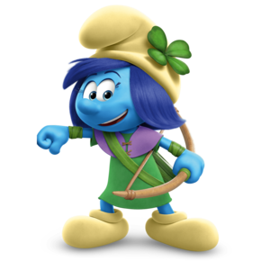
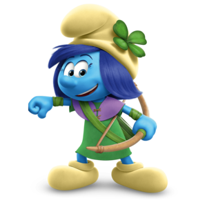
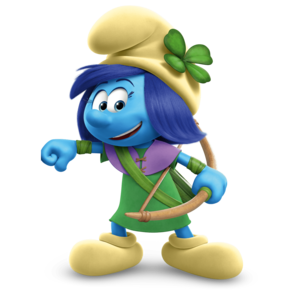
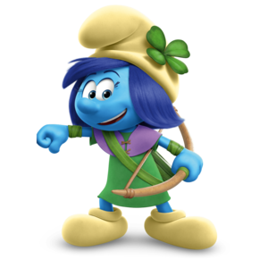

The fiercest female Smurf, Storm is an expert markswoman, an outstanding athlete, brave as can be, and as tough as nails. She loves to challenge Hefty and show off how strong and agile she is. Storm is not the least bit touchy-feely and has no patience for the mushy stuff – except when it comes to kittens. At times, she can be rather abrasive. That said, she is extremely loyal and protective of her friends.